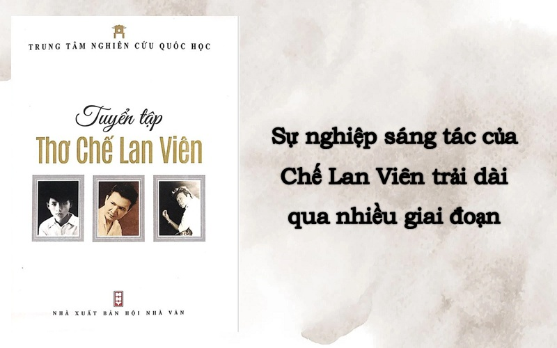

Thông tin giới thiệu tác giả Chế Lan Viên: Cuộc đời & Sự nghiệp
Giới thiệu tác giả Chế Lan Viên
- Bút danh: Chế Lan Viên.
- Tên thật: Phan Ngọc Hoan.
- Năm sinh – mất: 1920 – 1989.
- Quê quán: Quảng Trị.
- Tác phẩm: Điêu tàn, Vàng sao.
- Giải thưởng: Giải thưởng HCM về Văn học Nghệ thuật 1996.
Thông tin cơ bản về Chế Lan Viên
Chế Lan Viên, tên thật là Phan Ngọc Hoan, sinh ngày 20 tháng 10 năm 1920 tại xã Cam An, huyện Cam Lộ, tỉnh Quảng Trị và qua đời vào ngày 1 tháng 6 năm 1989 tại Bệnh viện Thống Nhất, thành phố Hồ Chí Minh.
Ông là một trong những nhà thơ và nhà văn nổi bật của Việt Nam, được vinh danh là “Bình Định tứ hữu” cùng với các nhà thơ Hàn Mặc Tử, Yến Lan và Quách Tấn.
Lớn lên trong một gia đình truyền thống nhà nho, Chế Lan Viên sớm bộc lộ khả năng thơ ca từ thuở còn trẻ. Ở tuổi 17, ông đã cho ra mắt tập thơ đầu tay mang tên Điêu tàn, tác phẩm này nhanh chóng gây ấn tượng mạnh mẽ trong cộng đồng văn học.
Điêu tàn không chỉ khẳng định tên tuổi của ông mà còn mở ra một trường phái thơ mới, được gọi là Thơ Loạn, với những đổi mới táo bạo và phong cách độc đáo trong thơ ca thời bấy giờ.
Đôi nét về sự nghiệp Chế Lan Viên
Sự nghiệp văn học của Chế Lan Viên trải dài qua nhiều giai đoạn và để lại những dấu ấn quan trọng trong nền văn học Việt Nam. Ông là một tác giả đa tài, với kho tàng tác phẩm phong phú bao gồm thơ, văn xuôi, kịch bản sân khấu, và nhiều thể loại khác.
Chế Lan Viên không chỉ là một nhà thơ nổi bật với phong cách thơ độc đáo mà còn là một nhà văn xuất sắc. Ông kết hợp khéo léo giữa các yếu tố truyền thống và hiện đại trong thơ ca, tạo ra những tác phẩm triết luận sâu sắc, phản ánh những suy ngẫm về cuộc sống, con người và xã hội.
Sự nghiệp sáng tác của ông
Nhờ những đóng góp lớn lao cho văn học, ông đã được Nhà nước Việt Nam vinh danh với Giải thưởng Hồ Chí Minh về văn học nghệ thuật vào năm 1996. Chế Lan Viên vẫn mãi là một biểu tượng vĩ đại trong lòng người yêu thơ Việt Nam.
Các tác phẩm tiêu biểu của Chế Lan Viên
Chế Lan Viên đã đóng góp một khối lượng tác phẩm phong phú và có giá trị sâu sắc cả về nghệ thuật lẫn tư tưởng. Một số tác phẩm tiêu biểu của Chế Lan Viên bao gồm:
- Điêu tàn (1937)
- Ánh sáng và phù sa (1960)
- Hoa ngày thường, chim báo bão (1967)
- Vàng sao
- Thăm Trung Quốc (bút ký)
- Những ngày nổi giận(bút ký)
- Kinh nghiệm tổ chức sáng tác
- Nói chuyện thơ văn
Tài liệu tham khảo
Youtube:Chế Lan Viên - Nhà thơ lớn của văn học Việt Nam
Wikipedia:Chế Lan Viên